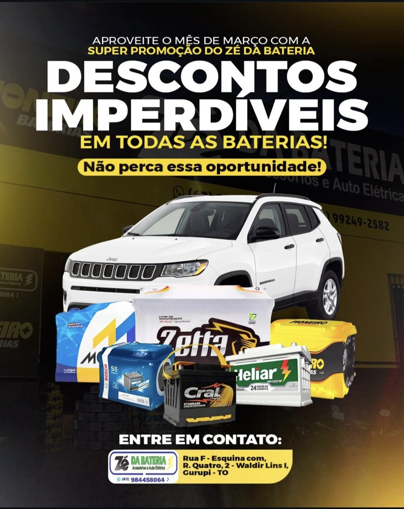

Pronta entrega
Baterias para sair do aperto e seguir rodando.
Estoque com várias marcas conhecidas, opções para diferentes veículos e atendimento pensado para quem precisa de agilidade sem abrir mão de confiança.
- Marcas reconhecidas pelo público
- Atendimento com foco em custo-benefício
- Loja física com estoque real em Gurupi
